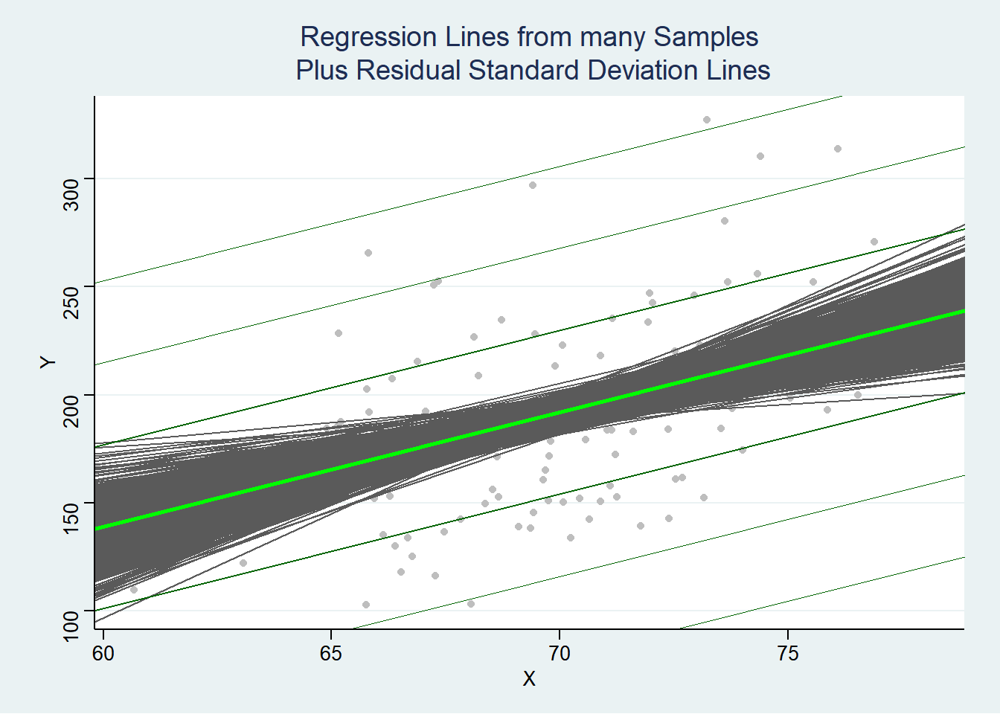

Finding the least squares line for linear regression can be highly useful. Since, if in reality, there is a linear relationship between two variables that could be modeled like the formula below, we can attempt to estimate these parameters using statistics and then predict novel data.
Even though we may be able to show an estimate for \(\beta_0\) and \(\beta_1\), we may not know if these are significantly different than if they were the status quo (e.g. no relation between X and Y).
For example, if we wanted to see if there is a relationship between heavy machinery factories (independent) and air pollution (dependent) in a given area, the intercept estimate (\(b_0\)) would estimate air pollution with zero factories while the slope estimate (\(b_1\)) would estimate the increase in air pollution for each additional factory.
Hypothesis testing for the intercept would be used to see if air pollution at zero factories is significantly different than zero. Hypothesis testing for the slope would be used to see if the relationship between factories and air pollution is significantly than zero.
5.1 Null Hypothesis Significance Testing
The central dogma of statistics is to make estimates about the population based on samples. Null Hypothesis Significance Testing (NHST) is a widely used statistical approach for testing the validity of a claim or hypothesis about a population based on sample data. The process involves comparing the observed data to what would be expected under a null hypothesis, which usually assumes no effect or relationship between variables.
Null Hypothesis
The null hypothesis (denoted as \(H_0\)) is a statement of no effect or no difference. In linear regression, it represents the default assumption like that there is no relationship between the variables under investigation or that the dependent variable is zero when the observed independent variable is zero.
Alternative Hypothesis
The alternative hypothesis (denoted as \(H_a\)) is a statement that contradicts the null hypothesis. In linear regression, it represents the possibility that there is a relation between the variables like that there is a change in the dependent variable when the independent variable is observed to increase or that the dependent variable is not zero when the observed independent variable is zero.
Hypotheses for Simple Linear Regression
The pair of hypotheses stated above about the slope and intercept can be formally written as so below:
5.1.1 The Process of Null Hypothesis Significance Testing
State the null hypothesis (\(H_0\)) and alternative hypothesis (\(H_a\)). Since there are two estimated parameters, two pairs of hypotheses are made.
Choose a significance level. The significance level, denoted by \(\alpha\), is the probability of rejecting the null hypothesis when it is true. The most commonly used significance level is 0.05
Collect data and calculate the test statistic. Gather your sample data and perform the appropriate statistical test to calculate the test statistic. The test statistic is a numerical value that measures the difference between the observed data and what would be expected under the null hypothesis. The Central Limit Theorem says that the distribution of sample estimates for \(\beta_0\) and \(\beta_1\) will be normally distributed. Since the variance for this distribution is uncertain, we use a t-test and thus a t-statistic for each hypothesis.
Determine the p-value. The p-value, denoted as \(p\), is the probability of observing a test statistic as extreme or more extreme than the one calculated from the sample data, assuming the null hypothesis is true. It quantifies the evidence against the null hypothesis. Lower p-values indicate stronger evidence against the null hypothesis since they imply that the observed results are less likely to have occurred by chance alone under the null hypothesis. In other words, a smaller p-value suggests that the observed effect or relationship between the variables is more likely to be genuine and not just a random occurrence. Conversely, higher p-values indicate weaker evidence against the null hypothesis. This means that the observed results are more likely to have occurred by chance under the null hypothesis, and there is insufficient evidence to suggest that the effect or relationship is genuine.
Compare the p-value to the significance level (\(\alpha\)). If the p-value is less than or equal to the chosen significance level (\(p \leq \alpha\)), then reject the null hypothesis in favor of the alternative hypothesis. This implies that there is statistically significant evidence to support the claim made by the alternative hypothesis. If the p-value is greater than the significance level (\(p > \alpha\)), then do not reject the null hypothesis, as there is not enough evidence to support the alternative hypothesis
5.2 Testing the Intercept and Slope
Below is a sample of 32 cars from the early 20th century. Each point represents a car where the X axis shows the independent variable (car weight) and the Y axis shows gross horsepower.
Code
library(tidyverse)library(plotly)(ggplot(mtcars, aes(x = wt, y = hp)) +geom_point(color ='darkblue',fill='lightblue',size=2.5,shape=21,alpha=.9) +theme_classic() +geom_smooth(method ="lm", se =FALSE) ) %>%ggplotly()
5.2.1 Our Measly Sample
There are more than 32 cars out there in the world. See below; our sample of 32 cars happens to show the Y-intercept being -1.821 when we try to model weight and horsepower and an increase of 46.16 horsepower for every increase of 1000 pounds. Suppose we sampled a different set of cars and found that the intercept was actually 5 horsepower for a 0 pound car… or -3 horsepower… or 100 horsepower for a zero pound car. Similarly, for the slope, maybe if we drew another sample of cars- we would get a different slope. We could get a nearly endless amount of combinations depending on what our sample was.
Code
lm(hp~wt, data=mtcars) %>% pander::pander()
Fitting linear model: hp ~ wt
Estimate
Std. Error
t value
Pr(>|t|)
(Intercept)
-1.821
32.32
-0.05633
0.9555
wt
46.16
9.625
4.796
4.146e-05
What would happen if we kept collecting samples from cars and checking each sample’s Y-intercept and slope? We would get a distribution of samples.
A sampling distribution
The sampling distribution of the y-intercept (\(b_0\)) would be the collection of all possible estimates of the y-intercept obtained from different samples of the same population. Similarly, the sampling distribution of the slope (\(b_1\)) would be the collection of all possible estimates of the slope obtained from different samples of the same population.
5.2.2 The Central Limit Theorem
In the above section, we mentioned the existence of a sampling distribution for each estimated parameter. The Central Limit Theorem (CLT) is a fundamental concept in probability and statistics that states that, given a large enough sample size, the distribution of the sample parameter, in this case, potential Y-intercepts or slopes of a random variable will approach a normal distribution, regardless of the shape of the underlying population distribution. This theorem is crucial because many statistical methods, including linear regression, rely on the assumption that the data are normally distributed.
Y-intercept (\(\beta_0\))
The sampling distribution of the y-intercept (\(\beta_0\)) is the collection of all possible estimates of the y-intercept estimates (\(b_0\)) obtained from different samples of the same population. It centers around the unknown true Y intercept parameter and has an unknown spread. It describes the probability distribution of the estimates.
Slope (\(\beta_1\))
The sampling distribution of the slopes (\(\beta_1\)) is the collection of all possible estimates of the slope estimates (\(b_0\)) obtained from different samples of the same population. It centers around the unknown true slope parameter and has an unknown spread. It describes the probability distribution of the estimates. It describes the probability distribution of the estimates and provides insight into the variability of the estimates.
Visualizing the Central Limit Theorem
Below is an applet that allows you to draw a parent population distribution and see what different
5.2.3 Estimating the Distribution of Sample Intercepts Under the Null Hypothesis
Y-intercept (\(\beta_0\))
Under the null hypothesis, we would assume the null hypothesis is \(H_0:\beta_0\). What we don’t know is \(\sigma_{\beta_0}\). We can estimate this parameter with \(s_{b_0}\).
Additionally, this formula can be thought of as so:
\(s_{b_0}\) = \(\sqrt{} (\) Constant variation \(+\) Variation caused since data is centered away from the intercept.\()\)
Conceptually, the formula above computes the standard error of the estimated intercept (\(\beta_{0}\)), which measures the uncertainty or variability associated with the intercept estimate. In other words, it quantifies how precise the estimate is and how much it is expected to vary from one sample to another.
\(\text{MSE}\): also called \(\sigma^2\). This term represents the variance of the residuals (estimated errors) in the regression model. It reflects the degree of dispersion in the observed values around the predicted values. When you multiply with the rest of the formula, you are essentially scaling the standard error of the intercept according to the overall uncertainty or variability in the model’s predictions. A larger variance in residuals (\(\text{MSE}\)) will result in a larger standard error for the intercept, indicating a higher degree of uncertainty in the intercept estimate.
\(n\): This is the number of observations in the dataset.
\(\frac{1}{n}\) This term reflects the effect of sample size on the precision of the estimated intercept. As the sample size (\(n\)) increases, the standard error of the intercept will generally decrease, which means that the intercept estimate becomes more precise with more observations.
\(\bar{X}\): This is the mean of the predictor (independent) variable values.
\(\text{SSTO}(X)\): This is the sum of the squared differences between each predictor variable value (\(X_i\)) and the mean predictor variable value (̄\(\bar{X}\)).It can also be written as so: \(\sum_{i=1}^{n}{\left(X_i - \bar{X}\right)^2}\) Geometrically, this term represents the sum of the squared horizontal distances between each data point and the vertical line that passes through the mean of the predictor variable values.
\(\frac{\bar{X}^2}{\text{SSTO}(X)}\) This term captures the influence of the distribution of the predictor variable values on the precision of the estimated intercept. The denominator (\(\text{SSTO}(X)\)) measures the spread of the predictor variable values around their mean (\(\bar{X}\)̄). A larger spread in the predictor variable values will generally result in a smaller standard error for the intercept, assuming that the variance of the residuals (\(\sigma^2\)) remains constant.
Since we have our \(\beta_0\) and our \(s_{b_0}\), we can estimate the sampling distribution. We will use a t-distribution with \(n-2\) degrees of freedom since the spread is estimated:
Slope (\(\beta_1\))
Under the null hypothesis, we would assume the null hypothesis is \(H_0:\beta_1\). What we don’t know is \(\sigma_{\beta_1}\). We can estimate this parameter with \(s_{b_1}\).
\(\text{MSE}\): also called \(\sigma^2\). This term represents the variance of the residuals (estimated errors) in the regression model. It reflects the degree of dispersion in the observed values around the predicted values. A larger variance in residuals (\(\text{MSE}\)) will result in a larger standard error for the intercept, indicating a higher degree of uncertainty in the intercept estimate.
\(\text{SSTO}(X)\): This is the sum of the squared differences between each predictor variable value (\(X_i\)) and the mean predictor variable value (̄\(\bar{X}\)).It can also be written as so: \(\sum_{i=1}^{n}{\left(X_i - \bar{X}\right)^2}\) Geometrically, this term represents the sum of the squared horizontal distances between each data point and the vertical line that passes through the mean of the predictor variable values.
This formula gets the square root of the ratio of the squared residuals and the total sum of squares. Since we have our \(\beta_1\) and our \(s_{b_1}\), we can estimate the sampling distribution. We will use a t-distribution with \(n-2\) degrees of freedom since the spread is estimated:
5.2.4 Calculating our Test-Statistic Under the Null Hypothesis
Y-intercept (\(\beta_0\))
This is the formula for the test statistic for \(\beta_0\). It measures how far the estimated Y-intercept \(b_0\) is from the null hypothesis for \(\beta_0\) in units of standard errors (\(s_{b_0}\)) of \(b_0\)- thus the division by \(s_{b_0}\). Though the hypothesized value of \(\beta_0\) is typically 0, it could be any number.
\[
t = \frac{b_0 - (H_0:\beta_0)}{s_{b_0}}
\]
Slope (\(\beta_1\))
This is the formula for the test statistic for \(\beta_1\). It measures how far the estimated slope \(b_1\) is from the null hypothesis for \(\beta_1\) in units of standard errors (\(s_{b_1}\)) of \(b_1\)- thus the division by \(s_{b_1}\). Though the hypothesized value of \(\beta_0\) is typically 0 (no relationship), it could be any number.
\[
t = \frac{b_1 - (H_:\beta_1)}{s_{b_1}}
\]
5.2.5 Calculating our P-value Under the Null Hypothesis
The p-value is the probability of obtaining a test statistic as extreme or more extreme than the observed value, assuming the null hypothesis is true. We can mathematically calculate this by using the t-distribution
Where \(t\) is the t-statistic from the sample and \(t_{n-2}\) is the t-distribution with \(n-2\) degrees of freedom with a mean of \(H_0:\beta_0\) or \(H_0:\beta_1\) and a standard deviation of \(s_{b_0}\) or \(s_{b_1}\). This can be illustrated below.
5.3 Simulating the NHST Process
Below we set up hypothetical population parameters.
5.3.1 Parameters
Population parameters
\(X \sim \mathcal{N}(70, 3)\). This will represent height of men.
\(\beta_0 = -179\). This would represent the weight of a person who is 0 inches tall.
\(\beta_1 = 5.3\). This represents how much additional weight someone will be when they are 1 inch taller.
\(\sigma = 38\). This represents the variance of the data around the true line.
Simulation variables
\(N = 700\). This represents that we are taking 700 simple random samples from the population.
\(n = 100\). This represents that for every sample, we are observing 100 people.
Code
n =100#sample sizebeta_0 =-179#true y-interceptbeta_1 =5.3#true slopesigma =38#choice of st. deviation of error termsX =rnorm(n, mean =70, sd =3)N <-1000#number of samples in our sampling distribution
5.3.2 Step One: State our pair of null and alternative hypotheses.
We are going under the assumption we do not know the population parameters. Because of this, we are going to formulate hypotheses about the relationship between height (our independent variable) and weight (our dependent variable). The first pair of hypotheses state that when American male height is 0, weight should be 0 as well- The second pair of hypotheses state that when American male height increases by 1 inch, there is no increase in weight.
5.3.5 Step Three- Part 2: Calculate the test statistic
We are going to estimate the distribution of all possible sample test statistics that someone could get from the population distribution assuming the null hypothesis is true. This allows us to see, under the null hypothesis, see how likely we are to get a sample as or more extreme than what we would ideally expect.
Calculating the t-value for \(\beta_0\) and \(\beta_1\)
Code
t_b0 = (b0 -0)/s_b0t_b1 = (b1 -0)/s_b1pander::pander(paste("the t-value for $b_0$ is",t_b0 %>%round(2), "the t-value for $b_1$ is",t_b1 %>%round(2)))
the t-value for \(b_0\) is -0.73 the t-value for \(b_1\) is 2.93
5.3.6 Step Four: Determine the p-value
Calculate the p-value for the Y intercept hypothesis and the slope hypothesis
Code
p_b0 =pt(-abs(t_b0), n-2)*2p_b1 =pt(-abs(t_b1), n-2)*2pander::pander(paste("the p-value for $b_0$ is",p_b0 %>%round(2), "the p-value for $b_1$ is",p_b1 %>%round(2)))
the p-value for \(b_0\) is 0.47 the p-value for \(b_1\) is 0
5.3.7 Step Five: Compare the p-value to the significance level
Code
reject_null_b0 = (p_b0 <= alpha)reject_null_b1 = (p_b1 <= alpha)pander::pander(paste("The P-value for the Y-intercept hypothesis is",p_b0 %>%round(6),"."))
The P-value for the Y-intercept hypothesis is 0.466342 .
Code
pander::pander(paste("Since it is",reject_null_b0 %>%tolower(),"that (p<a), we",ifelse(reject_null_b0,"","fail to"),"reject the null hypothesis"))
Since it is false that (p<a), we fail to reject the null hypothesis
Code
pander::pander(paste("The P-value for the slope hypothesis is",p_b1 %>%round(6),"."))
The P-value for the slope hypothesis is 0.004198 .
Code
pander::pander(paste("Since it is",reject_null_b1 %>%tolower(),"that (p<a), we",ifelse(reject_null_b1,"","fail to"),"reject the null hypothesis"))
Since it is true that (p<a), we reject the null hypothesis
Here is the R calculated code from the sample.
Code
mylm %>% summary %>% pander::pander()
Estimate
Std. Error
t value
Pr(>|t|)
(Intercept)
-63.06
87.11
-0.7239
0.4708
X_sample
3.615
1.246
2.902
0.004578
Fitting linear model: Y_sample ~ X_sample
Observations
Residual Std. Error
\(R^2\)
Adjusted \(R^2\)
100
36.17
0.07914
0.06974
The probability of picking a sample as extreme or more extreme given the null hypothesis is visualized below as the area under the curve except for the middle section.
Code
par(mfrow=c(2,1))curve(dt(x, df=n-1), from=-10, to=10, main="Null hypothesis distribution with the\nprobability of the intercept sample result", ylab="", xlab="Possible t-values", yaxt="n")abline(v=c(abs(t_b0), -abs(t_b0)))curve(dt(x, df=n-1), from=-10, to=10, main="Null hypothesis distribution with the\nprobability of the slope sample result", ylab="", xlab="Possible t-values", yaxt="n")abline(v=c(abs(t_b1), -abs(t_b1)))
5.3.8 Step Three and Four through simulation
In the steps above, we estimate what it would be like if we were to take many samples using an estimated sample distribution of both intercepts and slopes. Below, using the population parameters defined above, 1000 samples will be taken of Americans in which an actual sampling distribution will be constructed.
Results from 1000 samples
Below is the result of overlaying every proposed line from each of the 1000 samples.
Code
simulations <-tibble(b0 =rep(NA, N),b1 =rep(NA, N),rmse =rep(NA, N))for (i in1:N) { Y <- beta_0 + beta_1*X +rnorm(n, 0, sigma) #Sample Y from true model mylm <-lm(Y ~ X) simulations$b0[i] <-coef(mylm)[1] simulations$b1[i] <-coef(mylm)[2] simulations$rmse[i] <-summary(mylm)$sigma}data <-tibble(X = X, Y = Y)
Code
(ggplot(data, aes(X, Y)) +geom_point(color ="gray") +geom_abline(aes(intercept = b0, slope = b1), data = simulations, color ="#5A5A5A") +geom_abline(intercept = beta_0, slope = beta_1, color ="green", size =1) +geom_abline(intercept = beta_0 + sigma, slope = beta_1, color ="darkgreen", size =0.5) +geom_abline(intercept = beta_0 - sigma, slope = beta_1, color ="darkgreen", size =0.5) +geom_abline(intercept = beta_0 +2* sigma, slope = beta_1, color ="darkgreen", size =0.25) +geom_abline(intercept = beta_0 -2* sigma, slope = beta_1, color ="darkgreen", size =0.25) +geom_abline(intercept = beta_0 +3* sigma, slope = beta_1, color ="darkgreen", size =0.1) +geom_abline(intercept = beta_0 -3* sigma, slope = beta_1, color ="darkgreen", size =0.1) +labs(title ="Regression Lines from many Samples\n Plus Residual Standard Deviation Lines",x ="X",y ="Y") + ggthemes::theme_stata())

Below is the histogram of the combined samples to make a sampling distribution of intercepts on the left and slopes on the right. Notice from the above graph and below distribution that the slope intercept has very large variation due to the increased variation since the data is centered away from the intercept.
Code
b0_samples = (ggplot(simulations, aes(x = b0)) +geom_histogram(aes(y = ..density..), fill ="skyblue3", bins =30) +geom_density(color ="green", size =1) +labs(title ="Sampling Distribution\n Y-intercept",x =expression(paste("Estimates of ", beta[0], " from each Sample")),y ="Density") + ggthemes::theme_stata() +theme(axis.text.y=element_blank(),axis.ticks.y=element_blank()) +geom_vline(xintercept = beta_0, color='purple'))b1_samples = (ggplot(simulations, aes(x = b1)) +geom_histogram(aes(y = ..density..), fill ="skyblue3", bins =30) +geom_density(color ="green", size =1) +labs(title ="Sampling Distribution\n Slope",x =expression(paste("Estimates of ", beta[1], " from each Sample")),y ="Density") + ggthemes::theme_stata() +theme(axis.text.y=element_blank(),axis.ticks.y=element_blank()) +geom_vline(xintercept = beta_1, color='purple'))gridExtra::grid.arrange(b0_samples , b1_samples, ncol =2)
Results from the sampling distribution
Code
pander::pander(paste("The mean of the sampling distribution for the Y-intercept turned out to be", simulations$b0 %>% mean %>%round(2),". Our estimate was",b0 %>%round(2)))
The mean of the sampling distribution for the Y-intercept turned out to be -179.73 . Our estimate was -63.06
Code
pander::pander(paste("The mean of the sampling distribution for the slope turned out to be", simulations$b1 %>% mean %>%round(2),". Our estimate was",b1 %>%round(2)))
The mean of the sampling distribution for the slope turned out to be 5.31 . Our estimate was 3.62
Code
pander::pander(paste("The variance of the sampling distribution for the Y-intercept turned out to be", simulations$b0 %>% sd %>%round(2),". Our estimate was",s_b0 %>%round(2)))
The variance of the sampling distribution for the Y-intercept turned out to be 90.11 . Our estimate was 86.23
Code
pander::pander(paste("The variance of the sampling distribution for the slope turned out to be", simulations$b1 %>% sd %>%round(2),". Our estimate was",s_b1 %>%round(2)))
The variance of the sampling distribution for the slope turned out to be 1.28 . Our estimate was 1.23
5.4 Setting Confidence Intervals
Confidence intervals, instead of exploiting the null hypothesis distribution to calculate uncertainty, use the sample distribution itself to calculate the likelihood that the true population parameter is withing the boundaries. With linear regression, confidence intervals are calculated for each coefficient of the regression model, \(\beta_0\) (intercept) and \(\beta_1\) (slope). The main idea is to provide a range in which the true population parameters are likely to lie, given the data and a specified level of confidence (usually 95%).
The formula to calculate the confidence interval is below.
the \(t^*\) is used to represent the t-value in which the area in between the negative and positive t-value on a t-distribution is .95.
When we say that the confidence interval captures the true parameter values “95% of the time,” it means that if we were to repeat the sampling process many times and compute the confidence intervals for each sample, about 95% of those intervals would contain the true population parameter. Note that this doesn’t mean there’s a 95% probability that the true parameter lies within the specific confidence interval calculated from one sample; rather, it means that the procedure we use to construct the interval, when repeated across multiple samples, would produce intervals that contain the true parameter value in 95% of cases.
5.4.1 Confidence Intervals for our simulation
We can directly visualize the 95 percent confidence interval with the visualization below. The purple line represents the true population parameter. The black line represents the sample estimation. The gray transparent box represents the 95 percent confidence interval.
Note: The visualization below may be a bit misleading since the 95 percent confidence interval does not represent the sample below, but the percentage of all samples below.